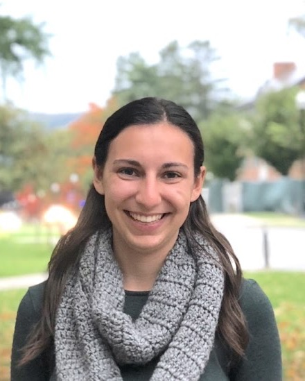

I am a PhD candidate in Economics at the University of California San Diego, working at the intersection of development economics, macroeconomics, and labor. My research bridges micro and macro development: I combine micro data and quasi-experimental methods with macro models to study how expansions of higher education shape human capital formation and structural transformation in developing countries, and how labor-market shocks affect families and migration decisions.
Before graduate school, I was a Research Associate at the Penn Wharton Budget Model at the University of Pennsylvania, where I analyzed the macroeconomic implications of education, labor, and fiscal policies. I received my B.A. in Economics from Mount Holyoke College.
Alongside my research, I co-host Backstory, a podcast about how research papers in economics get made.
